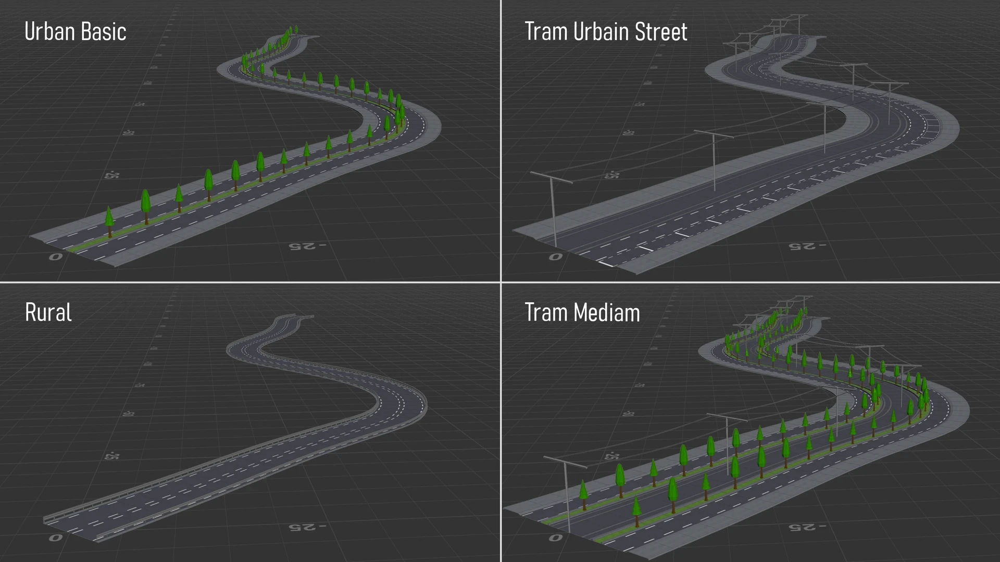

Hugo Boussard氏が、入力カーブから道路断面をプロシージャルに生成するスタンドアロンのHoudini HDA「Grammar Road」を無料公開。歩道・車線・自転車レーン・バリア・中央分離帯・駐車帯・トラム軌道などを、読みやすいテキスト文法で組み合わせて道路プロファイルを定義でき、JSONの「文法ウォレット」でパターンを整理できる。GitLabでソース込みで公開されている。
Hugo Boussard「Grammar Road - HDA」（ArtStation）
https://www.artstation.com/artwork/DYka29
Grammar Road - Open Demo（GitLab、ダウンロード）
https://gitlab.com/hugo.boussard.3d/grammar-road-open-demo
Hugo Boussard氏のArtStation
https://www.artstation.com/hugo_boussard